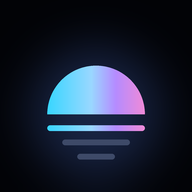

MORGENBRIEFING
Täglicher News-Podcast
ETHIK
Interaktives Poster
Skinner, Roth, Henecka
PDF → Word / PowerPoint
ABIDASMUSS
Wähle dein Fach
📊
VBWL
Volks- und Betriebswirtschaftslehre
🩺
GESO
Gesundheit und Soziales
📖
DEUTSCH
Literatur, Sachtexte, Erörterung
🏛️
GESCHICHTE
Methodenwerkstatt